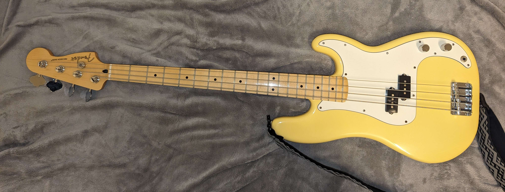

Since senior year of high school, I've been learning and practing the bass guitar. I've always enjoyed listening to music and learning how to play songs has made me truly appreciate the amount of effort it takes to write a piece of music. Originally, I had learned to play the flute during middle school, however I didn't find enjoyment in playing it. I had thought intially that learning how to play an instrument wasn't for me. That was until I picked up the bass. Something about the heavy strings and the deep tone of the instrument spoke to me and I was hooked. I practice nearly everyday and have even started playing with my friends in our makeshift band. My friends and I are planning on making our own music in the future, although we don't expect to be professional musicians. As of now, I firmly believe that anyone can pick up an instrument and learn to play. All it takes to learn how to play an instrument is passion and a willingness to learn.

| Song Name & Artist | Can I Play It? | Have I Memorized it? |
|---|---|---|
| Looking Out For You - Joy Again | ✓ | ✓ |
| Maple Syrup - The Backseat Lovers | ✓ | ✓ |
| Kilby Girl - The Backseat Lovers | ✓ | ✗ |
| Highway Tune - Greta Van Fleet | ✓ | ✓ |
| For Whom the Bell Tolls - Metallica | ✓ | ✗ |
| Hysteria - Muse | ✗ | ✗ |
| Cigarette Daydreams - Cage The Elephant | ✓ | ✓ |
| Freaks - Surf Curse | ✓ | ✓ |
| Disco - Surf Curse | ✓ | ✓ |
| Smooth Operator - Sade | ✓ | ✓ |
| Dance In Room Song - Sipper | ✓ | ✓ |
| Relentless Healing - Big Bite | ✓ | ✓ |
| Tek It - Cafune; | ✓ | ✗ |
| Feels Like You - Whirr | ✓ | ✓ |
| Jigsaw Falling into place - Radiohead | ✓ | ✗ |
| Deantown - Vulfpeck | ✗ | ✗ |